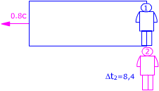
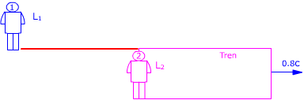

b)
Para el observador 1 (Estación), una oscilación del péndulo dura 14 s y durante este tiempo ve alejarse al tren con velocidad 0.8c Al cabo de 14 s la distancia del tren a la estación será: $$x_1=v\,\Delta t_1=0{,}8\cdot3\cdot10^{8}\ \mathrm{\frac{m}{s}}\ 14\ \mathrm{s}=3{,}36\cdot10^{9}\ \mathrm{m}$$ El rectángulo representa un recinto que se mueve respecto
al observador 2 con velocidad 0.8c  Para el observador 2 (Tren), una oscilación del péndulo dura 8,4 s y durante este tiempo ve alejarse el recinto con velocidad 0.8c Al cabo de 8.4 s la distancia de la estación al tren será: $$x_2=v\,\Delta t_2=0{,}8\cdot3\cdot10^{8}\ \mathrm{\frac{m}{s}}\ 8{,}4\ \mathrm{s}=2{,}02\cdot10^{9}\ \mathrm{m}$$
¡Resulta que el tren dista de la estación 3.36·109
m y que la estación dista del tren 2.02 109 m!  Considera la porción de vía que va de la estación al tren Observador 1 (Estación) Observador 2 (Tren) Aplicando la conversión de longitudes: $$\begin{aligned} &L_2=\gamma\,L_1\\[6pt] &L_2=0{,}6\cdot3{,}36\cdot10^{9}\ \mathrm{m}=2{,}02\cdot10^{9}\ \mathrm{m} \end{aligned}$$ Un observador dentro del tren ve la distancia a la estación más corta porque la ve en movimiento
|